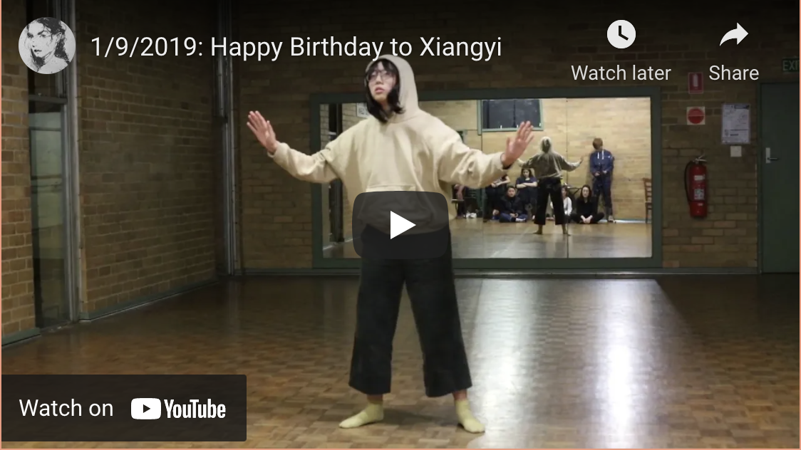
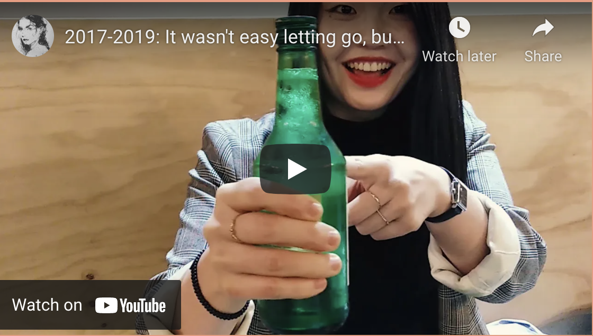
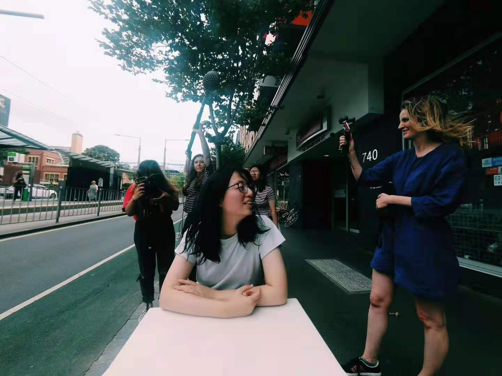
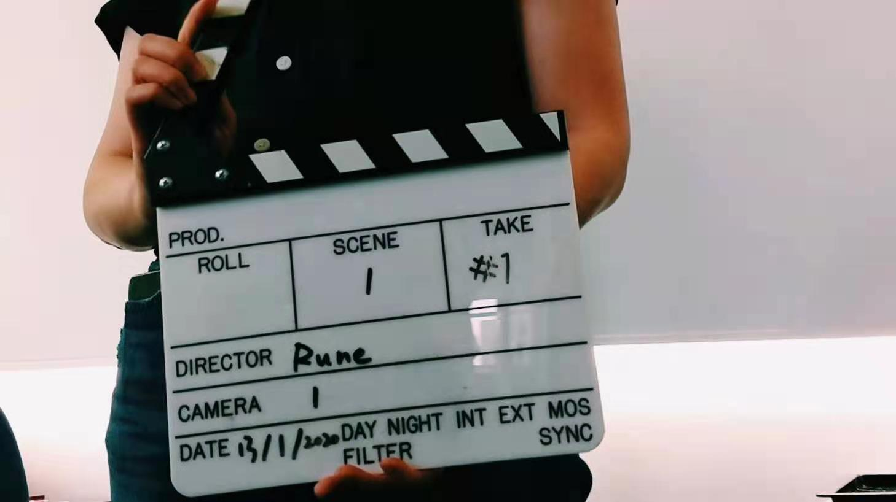
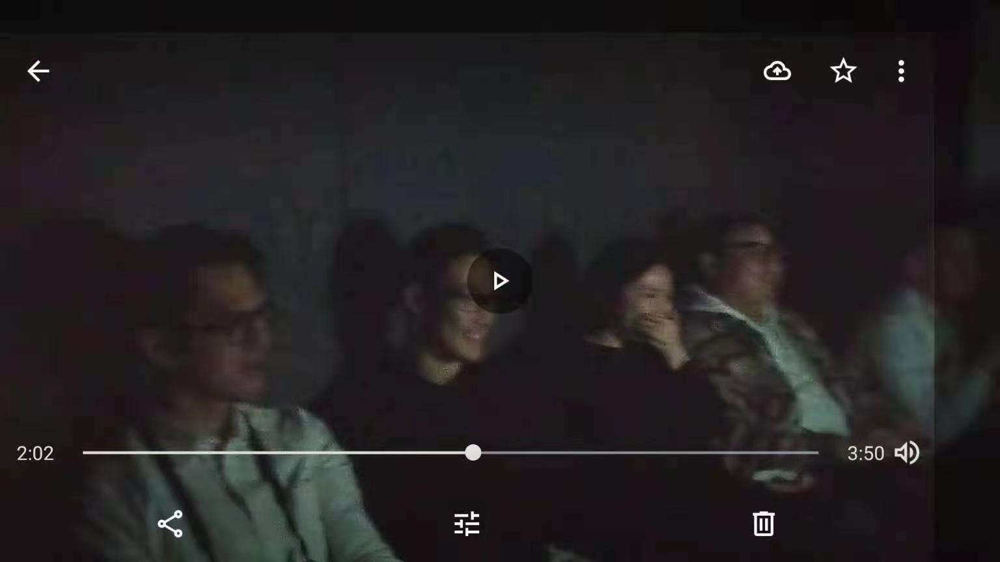

Like every story, this story can also start with ‘it is not in the plan’. However, there are many hidden clues before all this happened. (And I believe what is happening now will somehow affect my future life too. Exciting!)
There should be a reason that I went into that magical cave, Flood Projects. It was to meet all those talented movie makers / producers, Amiel, Chris, and Jordan, and as you know, to get into (making) films. When you think further, a long way back to Have a taste in the industry, I started with a film shooting case. It is kind of explained why one day I was so into making my own (short) films.
Start from recording life These days, many people use vlogs to record life. I also started doing that. It is a natural choice - there are always some moments in life you want to record. And that led to a bunch of videos stored in my hard drives. They are the little pearls. What I need is to find the right way to connect them. There should be a flow, and somehow a story to tell.
I tried some. Some worked, and some did not. Though it is still embarrassing to show people this, especially letting them watch in front of me, I still like it (and it is in Chinese):

And you can have a sneak peek of my life in Melbourne, using all the little pearls:

Like rubbish is a misplaced resource, I believe there is always a place for all my videos, you know, somehow, somewhere, someday (and that is definitely not the excuse for me storing all my stuff).
Work with Signal I thought I would just continue making my super casual film like this, I received an email from Signal. It has a summer school program about making films. ‘That is the chance! And I am gonna take that for sure.’ I immediately applied, and several days later, I was in.
It was a female-only program and called Female Futures. Though it looks very feminism, it is not tense and actually perfect for all genders. There are many things to learn in the program. Besides the basic ideas and skills of making films, I also realized other personal battles, no matter it is because of the gender, race, or any other individual issues.

The schedule was super tight since everything needs to be finished in ten days. That also means that we all have a strictly limited time to do individual shooting and editing. Thanks to the filmmakers, Kate Lefoe and Hannah Moore, helped with organizing and answering all the questions. And Signal is a place that everyone is ready to help. That feeling is super warm, giving me lots of strength and inspirations (sometimes I feel it is too good to be real).
Back to the story. All the lucky people, including me, were invited to respond to the provocation ‘What could a Gender Equal Future be like?’. Honestly, I had no idea, I do not think of these things often. All I want was to make a fun film, a film can bring people smiles and make people happy. Yes, happy, if we can have a gender-equal future, it should be a happy one. So my original idea was to make a happy film, all the smiles and laughs. Yes, without any meanings, just hahaha. To keep everything easy and make full use of the space and time, I made the scene super simple, and kept the plan quite open. When everyone asked me what would you shoot, I was like, will see how life goes (and that is actually my life plan).

However, when I started to shoot, I found out that it is almost impossible to direct everyone to be naturally happy. After shooting one or two, I found that this would not work. So I paused the whole team for a while. After some time observing and thinking, I made a quick decision, keep shooting. But this time, I told the photographer to take in a longer time, including the part after I shout cut - many people turned to be happier, and smiled or laughed more after shooting. It is like being in the relationship, people sometimes pretend to be happy to please the other. I hope the equal-gender future would help with that problem. It is not a straight or direct answer to the question. However, I see this as a chance to let people know they can be happy, and no matter the gender is, nothing can stop you from accepting the real you, taking care of yourself, and be naturally happy.
This trick worked! Some parts did not work somehow - there were still clips that look strange and fake, not that happy. But everyone watched it smiled, laughed, and sometimes they did not even notice. To make the film more colourful and enrich, I changed the background colours based on my team’s advice. And most importantly, I invited all the Signal staffs I can find that time to join in. It was also out of plan. However, when I watch it back from now, it became the best gift that I can keep for that time.
What should I say… Life knows what the best plan is.
Ok, enough for my blah blah, here is my film:
Besides directing, editing, and helping around, I also got to act in my friend’s film. I was super honoured to receive Amira’s invitation for letting me star in her film. Though I always hide from the camera when I was young, I felt more and more comfortable now. Her idea of reshooting the old ad was brilliant (I work in the ad industry now and when I search the archive, I found out lots of these ads, and we need to do something).
Watch Amira’s film here:
And you can watch more stories behind the program here:
If you are young enough, and in Melbourne, I would strongly recommend you to go to Signal for different workshops. It is free, lots of options, nothing to lose (and I really hope that one day China can have that kind of space as well).
Do something with more people, for more people Yes, like always, from then I thought I would keep joining in Signal programs and doing more films with them. Life said, nope, you should be more independent yourself. It sent me back to China. The process of that was a strange experience - I never thought of in my 20s, I would wear a diaper for almost 20 hours without any sleep. A little bit embarrassing, but I was in my period, so no other choices).
Being in the quarantine was nice to me since I enjoy being alone most of the time. To make full use of that, I planned to do some personal projects (besides that, apply for getting hired). At the same time, I received the message from Signal. The Female Future team also wanted to do something to record this period. That was perfect! So the plan was to interview some artists to see how they feel and do art recently. Because my experience was super different, so I decided to interview myself, and using the footages I shot along the way. That video was used as an example for the whole team to get a better understanding of the plan, and you can have a watch it here:
This project did not end here. When I got back to my parents’ place, I decided to have another interview. I interviewed my friend Xiaoxiao - an Asian female who lost her job because of all the craziness and struggled to survive in Melbourne. I did not overthink but felt that I should show these things, these people, and these aspects of life. That time I somehow felt the responsibility though it was not only about the gender or race. And this time, I did not try to make it funny.
When I got on the track of a full-time job, making films becomes my part-time hobby. However, limited by the time, energy and the equipment, I did not really start. And my first job was a little bit too much, I did not get to do any other personal projects and felt my creative energy disappeared. However, when I got into the second company (yes, I changed a lot), I found there would be a potential to build something. Inspired by Josh, my colleague, I decided to make a music film.
I asked my friends if they know any musicians that need music videos. I thought that would be the hard part, but it turned out that nope - just one night, I already connected to a musician, my friend’s friend, and they recommended a song. The next day, I already have a picture in my mind, and I discussed that with Bella, an editor I met in the company. She also had a passion for doing this kind of experiment, so she was happy to help. And my another friend, Mengyao, was just right for the actress positon. Bang! The cozy team was ready!
I think if you have a strong willingness to do something, people or everything around will help.
In one month, we made it.
And we even had a little screen night!

I love sharing my films - I always felt fortunate about having people I can ask for feedback. I especially like watching them watching (sometimes I even think that is my favourite part since observing people is my all-time hobby). It is always good to see reactions so that I am not making films that for nobody.
I should admit that the more I tried, the more fun I got. The passion is getting stronger and stronger, and it affects my decision making on future jobs - my main reason for getting the third job after coming back was to shoot films around the world with the team (fingers crossed for me getting those chances).
And yes, besides work, I will also try to experiment with other forms of films. Let us see how life goes.